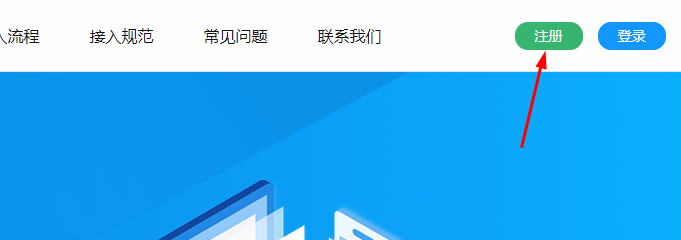

获取33云教育资源的流程如下图：
- 1：注册成为开发者
- 2：获取资源使用权限
- 3：调用资源接口或33云资源组件
- 4：获取33云资源
- 1注册为开发者
-
在开放平台首页右上角点击【注册】，完成开发者账号创建，如下图所示

- 2获取资源使用权限
-
进入开放平台【管理中心】可以申请开通相关资源的使用权限。如下图所示
双方签订资源接口使用协议后，学科网会根据协议开通相关资源接口的正式使用权限。
开发者注册成功后，有7天的资源及资源API的免费试用时间。试用结束后，开发者可进行购买资源及资源API的正式使用权限。 资源使用权限支持按量购买和按时间购买。
按量购买：指根据开发者实际调用资源的数量及调用API的次数进行计费。收费标准请联系我们。
按时间购买：指开发者可以申请按月或按年进行购买资源及API的调用。收费标准请联系我们。
- 3调用资源接口或33云资源组件
-
资源接口调用方法，参见接口调用指南。
- 4获取33云资源
-
完成以上步骤后，开发者便可通过接口正式获取到33云的教育资源。